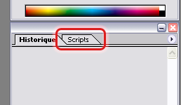
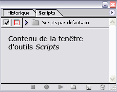
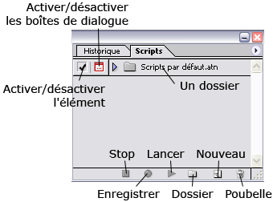
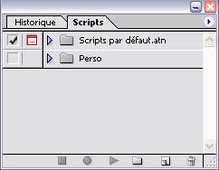
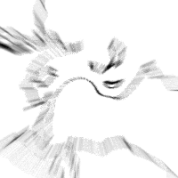
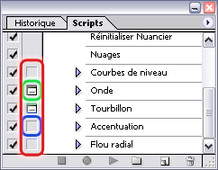
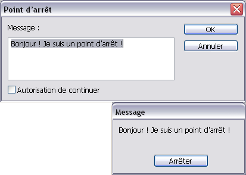
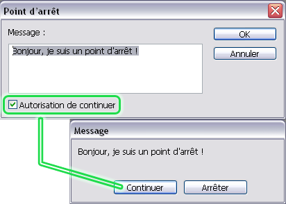
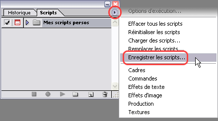
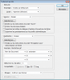

Dans ce tutoriel, ô combien détaillé et expliqué, vous pourrez enfin découvrir les scripts sous Photoshop.
Ils vous font peur ? Ils sont trop compliqués ? Ils ne fonctionnent jamais ? A partir de maintenant, apprenez rapidement et simplement le fonctionnement de ces mygales venimeuses, et plus rien ne pourra vous résister... :pirate:
Bonne chance et amusez-vous bien : ici, pas d'interro surprise, juste un petit QCM final histoire de tester vos nouvelles connaissances :) !
Nous allons donc pouvoir commencer. Arrêtez de bavarder, sortez vos claviers et de quoi cliquer... c'est maintenant ou jamais !
Les scripts, kesako ?
Ben oui, les scripts, ça sert à quoi ? o_O Je vous rassure immédiatement, vous n'allez pas écrire des lignes de code comme vous pourriez le penser en lisant "script". Sous Photoshop, les scripts sont des petits programmes, enregistrés par vous-même, et qui permettent d'effectuer des opérations diverses en un seul clic. Concrètement, si vous pensez devoir effectuer régulièrement une opération sur vos photos, et que vous voulez éviter de la refaire manuellement à chaque fois, vous enregistrez dans un script cette suite d'opérations, une seule et unique fois, et Photoshop se chargera de la répéter autant de fois que nécessaire sur les montages de votre choix. Plus rapide, plus simple, moins fastidieux.
Passons sans plus attendre à la suite du tuto, maintenant que vous en avez l'eau à la bouche...
Étape 1
La chose la plus évidente serait de démarrer Photoshop. Faites-le ! Je rappelle que ce tuto marche aussi bien pour Photoshop CS1, 2 et 3.
Une fois le logiciel lancé, il n'est pas nécessaire de créer un nouveau projet comme vous avez l'habitude de faire. Laissez Photoshop tranquille et lisez la suite.
Étape 2
Rappelons ce que l'on étudie : les scripts Photoshop. Il est donc nécessaire d'afficher la fenêtre d'outils Scripts. Normalement, celle-ci est déjà dans l'interface par défaut (au premier lancement de Photoshop). Elle se trouve très exactement à coté de l'onglet Historique. Si vous ne voyez toujours pas, jetez un coup d'œil sur cette capture d'écran :

Et la fenêtre en question :

Malgré cela, je ne trouve pas cette fenêtre "Scripts". Comment l'afficher si elle a disparu de mon interface ? :euh:
C'est tout simple : il suffit d'appuyer sur F9 (ou Alt+F9 selon la version) ou encore d'aller dans le menu Fenêtre → Scripts.
Étape 3
Dès que vous avez votre fenêtre Script affichée dans votre interface, nous pouvons commencer.
Avant de développer le moindre script, nous devons identifier les fonctions de la boîte (ou fenêtre) à outils. Pour cela, rien de mieux qu'une petite capture commentée :

Voici l'utilité de chacun de ces éléments :
Les dossiers : dossiers contenant des scripts, afin de les classer facilement
Activer/désactiver l'élément : nous verrons ceci dans la suite du tuto
Activer/désactiver les boîtes de dialogue : nous verrons ceci dans la suite du tuto également
Stop : arrêter l'exécution du script
Enregistrer : commencer l'enregistrement d'un script
Lancer : démarrer un script
Dossier : créer un nouveau dossier de rangement
Nouveau : créer un nouveau script vierge
Poubelle : supprimer un script
Alléchantes, toutes ces fonctions, hum ? ^^
Et bien apprenons tout de suite à créer un nouveau script. C'est parti !
Vous allez voir, ce n'est pas si compliqué puisqu'il n'y a pas une seule ligne de code à taper. La belle vie ! :D
Étape 1
Avant de commencer, je vous conseille de créer un dossier bien à vous, dans lequel vous rangerez vos futurs scripts. Voici comment faire :
Cliquez sur l'icône "Dossier"
Dans la fenêtre qui vient de s'ouvrir, tapez le nom de votre choix, par exemple "Perso"; cliquez sur OK pour valider
Ca-y-est ! :) Votre dossier est créé, vous pouvez y classer les scripts que vous aller élaborer.
Voilà la tête que devrait avoir votre boite à outils à présent :

Étape 2
Le dossier est créé, vous connaissez l'interface... que dire de plus ? Rien, vous l'avez compris, nous pouvons réellement enregistrer notre premier script. :D Heureux ?
Fonctionnement d'un enregistrement
Mais comment Photoshop enregistre-t-il un script ? Et qu'appelle-t-on « script » ?
Pour commencer, vous devez savoir que, dans le cas de Photoshop, un script n'est pas un ensemble de lignes de codes comme pour la programmation. Non, un script sous Photoshop, c'est un déroulement d'actions qui se lancent les unes après les autres. Concrètement, voici à quoi ressemble un script :
Actions
Créer un nouveau document
Remplir ce document avec du bleu
Sélectionner une région de l'image
Supprimer cette région
Pour un exemple direct, vous pouvez ouvrir l'ensemble Scripts par défaut.atn en cliquant sur la petite flèche bleue à côté. Vous avez une liste de scripts déjà enregistrés. Ensuite, cliquez sur la petite flèche bleue d'un des scripts (par exemple Vignette) et là vous verrez l'enchaînement des actions.
Comment Photoshop enregistre-t-il un script ? Il liste simplement les actions effectuées lorsque l'enregistrement est lancé. En fait, du moment que vous cliquez sur Enregistrer, chacun de vos mouvements sera enregistré : si vous changez la teinte, cette action sera mémorisée ; puis si vous inversez la sélection, cette action sera elle aussi mémorisée, à la suite. Et ce jusqu'à l'arrêt de l'enregistrement (en cliquant sur Stop).
Voilà, vous connaissez parfaitement le fonctionnement des scripts. Passons maintenant à la pratique. :D
Étape 3
Préparer l'enregistrement
Avant de commencer, il faut savoir quelles actions enregistrer : allez-vous faire un script de recadrage, ou bien un autre qui vieillit la photo... ? Vous devez parfaitement savoir les filtres que vous allez appliquer, les couleurs que vous aller choisir, etc. avant de lancer l'enregistrement.
Pour la démonstration, nous allons faire un script qui va créer une œuvre abstraite comme celle-ci :

Et on ne se moque pas ;) !
Voici donc les actions effectuées pour ce montage :
Créer document blanc de 200*200 pixels
Remettre les couleurs à zéro (touche D)
Rendu de Nuages
Courbe de niveaux
Onde
Tourbillon
Accentuation
Flou radial
Si vous ne comprenez pas certains de ces actions, ce n'est pas grave. Ce sont des effets divers que l'on trouve dans le menu Filtre.
Maintenant que l'on sait exactement que faire, nous pouvons créer et enregistrer le script !
Bien, vous suivez toujours ;) ? Alors c'est parti !
Etape 1
Créez un script vierge : cliquez sur "Nouveau" dans la boîte à outils Scripts. Dans la fenêtre qui apparaît, entrez un nom (par exemple "Test"), et n'oubliez pas dans la liste en dessous, de choisir le dossier qui vous convient, par exemple "Perso".
Cliquez sur "Enregistrer". Attention : dès que vous cliquez sur "Enregistrer", l'enregistrement commence !
Etape 2
Voilà, vous remarquerez que le bouton "Enregistrer" est enfoncé et de couleur rouge.
Cela veut dire qu'à partir de maintenant, Photoshop mémorise toutes vos actions. :-°
A vous de jouer !
C'est bon, à présent vous pouvez appliquer vos filtres. Voici comment faire pour réaliser l'image citée précédemment :
1. Menu Fichier, Nouveau (ou CTRL+N)
2. Enfoncez la touche D pour remettre les couleurs par défaut (noir & blanc)
3. Menu Filtre, Rendu, Nuages
4. Menu Filtre, Esthétique, Courbes de niveau Choisissez 160 comme niveau et l'option Supérieur. Validez par OK.
5. Menu Filtre, Déformation, Onde Laissez les paramètres actuels et validez par OK.
6. Menu Filtre, Déformation, Tourbillon Choisissez 120 comme angle et validez par OK.
7. Menu Filtre, Renforcement, Accentuation Gain : 200 Rayon : 7,0 Seuil : 0 Validez par OK.
8. Menu Filtre, Atténuation, Flou radial Valeur : 46 Mode "Zoom" Qualité "normale" Validez par OK.
Voilà, tous les filtres ont été appliqués ! L'enregistrement est terminé, cliquez sur le bouton "Stop" à côté de celui d'enregistrement.
C'est fini ! Vous voyez, ce n'était vraiment pas difficile. :) A présent votre script est mémorisé, vous pourrez le lancez ultérieurement et sans fin.
Etape 3
Votre script est mémorisé mais il sera supprimé au prochain lancement de Photoshop. Pour le conserver, sauvegardez-le, ou plutôt sauvegardez l'ensemble du dossier "Perso" :
Sélectionnez par un clic de souris le dossier à sauvegarder, en l'occurrence le dossier "Perso"
Cliquez sur la petite flèche en haut à droite de la boîte à outils Scripts
Choisissez "Enregistrer les scripts..." dans le menu
Laissez le nom par défaut ou écrivez-en un autre, puis validez avec Enregistrer
Pour retrouver votre dossier si celui-ci a disparu de la liste, suivez la même démarche mais en choisissant "Charger des scripts" dans le menu et en sélectionnant le fichier désiré : votre dossier est revenu !
Etape 4
Testez votre script ! Fermez les documents ouverts dans Photoshop. Repérez dans la liste votre script, et sélectionnez-le d'un clic de souris. A présent, vous pouvez cliquez sur "Lancer" (la flèche grise en bas). Admirez Photoshop qui refait vos actions à grande vitesse... et PAF ! :magicien: Voilà notre image toute faite, sans avoir bouger le petit doigt, d'un seul clic ! N'est-ce pas merveilleux ?
Vous pouvez bien entendu la modifier, l'enregistrer comme une image habituelle.
Bilan : Le plus dur a été fait ! Vous savez dorénavant enregistrer, sauvegarder et lancer un script ! :soleil:
Mais il y a encore quelques petits points à découvrir, moins importants mais parfois indispensables. Suivez le guide...
Dans un script, il arrive que certaines actions enregistrées aient fait appel à des boîtes de dialogue, c'est à dire des boîtes de réglages. Dans l'exemple, les actions nécessitant des boîtes de dialogue sont :
Le filtre Courbes de niveau
Le filtre Onde
Le filtre Tourbillon
Le filtre Accentuation
Le filtre Flou radial
En effet, lors du choix de ces actions, une fenêtre s'est ouverte et nous avons du valider par OK. Et bien sachez que vous avez alors deux possibilités lors de l'exécution de scripts contenants de telles actions :
Première solution : les options propres à cette action sont appliquées comme vous l'avez enregistré, et la boîte ne s'ouvre pas
Ou bien, vous demandez à Photoshop d'ouvrir la boîte de dialogue de l'action et l'utilisateur pourra entrer ses propres réglages.
Et ce, vous l'avez compris, pour chaque action du script, que ce soit un filtre, un effet, etc. du moment qu'il est configurable (en effet, certains actions ne requièrent pas d'options et n'ont donc pas l'icône associée).
Activer/désactiver ces boîtes
Pour chaque action nécessitant une boîte de dialogue, vous trouverez à côté de celle-ci un espace cliquable. Analysons la capture ci-dessous :

L'encadré rouge désigne les zones cliquables des actions qui demandent une boîte de dialogue (Courbes de niveau, Onde etc.) alors que les action ne nécessitant pas de boîte de réglages n'ont pas cet espace cliquable (Nuages par exemple).
L'encadré bleu désigne un espace cliquable possible, mais non activé : lors de l'exécution du script, la fenêtre de réglages pour le filtre Accentuation ne sera pas affichée.
Au contraire, l'encadré vert désigne un espace cliquable possible, et activé : la fenêtre de réglages pour les filtres Onde et Tourbillon sera affichée et l'utilisateur pourra rentrer ses propres paramètres.
Pour activer ou désactiver une fenêtre d'action, cliquez sur cet espace. L'apparition d'une petite icône comme dans l'encadré vert désigne l'activation de la boîte de dialogue.
Ce point n'est pas le plus simple du chapitre, je l'avoue. Ainsi si vous n'avez pas compris ce n'est pas grave, cette fonction n'étant pas souvent utilisée (à part pour la distribution publique de vos scripts, par exemple, pour que l'utilisateur puisse entrer ses propres paramètres). ;)
Activation/désactivation des éléments
Rappelez-vous cette image. Le bouton qui nous intéresse est, comme dit dans le titre, Activation/désactivation des éléments.
Ca sert à quoi ?
Ce bouton, je vous l'accorde, n'a pas une grande utilité. Il sert en fait à activer (ou non) l'exécution d'une action dans un script.
Concrètement, dans notre script d'exemple, si vous ne souhaitez pas que le filtre Tourbillon soit appliqué, il vous suffit de cliquer sur le coche à côté de l'action et, lors du lancement du script, cette action ne sera pas prise en compte !
Les points d'arrêt
Non, nous n'allons pas apprendre à attendre le bus... :-° Le point d'arrêt est une action comme une autre, à la différence qu'il ne sert pas à exécuter une quelconque opération, mais à stopper momentanément le script dans lequel il est placé. Et ce jusqu'à l'intervention de l'utilisateur.
Il existe deux types de points d'arrêt, que nous allons voir en détails.
Le point d'arrêt total
Un nom un peu vague pour une fonction très simple : arrêter le script en affichant un message, sans possibilité de continuer. Ainsi, seul le bouton Arrêter apparaît.
Voyez dans la capture ci-dessous la fenêtre de réglage et le dialogue en résultant (lors de l'exécution du script) :

Comment l'insérer :
Pendant l'enregistrement de votre script (ou après enregistrement), cliquez sur la flèche en haut à droite de la boîte à outils Scripts et sélectionnez Insérer un point d'arrêt...
Dans la fenêtre de paramétrage, rédigez un message. Les retours à la ligne sont compris à l'affichage, pas besoin de code spécial ;)
Ne cochez pas la case Autorisation de continuer : c'est ce qui différencie le point d'arrêt total et partiel
Validez par OK.
Une action est créée dans votre script, appelée Arrêter. Vous pouvez, comme toutes les actions possédant des réglages, double-cliquer dessus pour modifier les paramètres.
Le point d'arrêt partiel
Il fallait s'y attendre : après total, partiel ! Une seule différence avec le point d'arrêt total : le partiel comporte un bouton Continuer pour ne pas interrompre le script après son apparition. En d'autres termes, lorsque le message apparaît, le script est bel et bien mis en pause, mais au lieu d'être obligé d'en sortir, vous pouvez continuer son exécution en cliquant sur ledit bouton (l'autre bouton Arrêter reste disponible également).
Pour un exemple concret, voyez la capture :

Comment l'insérer : Vous l'aurez compris, l'insertion d'un tel point d'arrêt est exactement la même qu'un arrêt total, à la différence que vous devez cocher la case Autorisation de continuer pour laisser à l'utilisateur le choix entre sortie ou continuation du script. :p
Partagez, publiez vos scripts
J'ai créé un (ou des) scripts et je souhaite les partager avec mes amis, ou même les proposer aux visiteurs de mon site web. C'est possible ?
Parfaitement ! Et de plus, ce n'est vraiment pas compliqué...
Enregistrer (exporter) un dossier de scripts
Comme vous le savez, les scripts sont contenus dans des dossiers, appelés aussi « ensembles ». Vous avez donc créé vos scripts dans un dossier de votre choix, nommé par exemple « Mes scripts persos ». Ce dossier contient un seul ou plusieurs scripts, peu importe.
Pour pouvoir partager et/ou publier cet ensemble de scripts, vous devez l'enregistrer en tant que fichier. Pour cela, sélectionnez d'abord le dossier à sauvegarder en cliquant simplement dessus (il s'obscurcit), et cliquez ensuite sur la petite flèche de la palette Scripts et dans le menu, choisissez Enregistrer les scripts....
Illustration :

Choisissez un emplacement dans votre disque dur, un nom (si celui par défaut ne vous plaît pas) et validez. C'est tout ! Un fichier vient d'être créé à l'endroit que vous avez défini. Vous pouvez le conserver, le copier, l'envoyer par mail à vos amis...
Utiliser (importer) un dossier de scripts
Ben oui, c'est bien gentil d'enregistrer son ensemble de scripts, mais comment font les personnes qui veulent l'utiliser ? :euh: Elles l'importent ! :p
Le chargement d'un dossier de scripts se fait aussi facilement que l'enregistrement. Voici comment procéder :
Cliquez sur la petite flèche bleue de la palette Scripts
Dans le menu, choisissez Charger des scripts...
Sélectionnez le fichier qui contient les scripts voulus et validez
Le dossier de scripts apparait comme par magie dans la palette d'outils ! :D Vous pouvez à présent utiliser lesdits scripts à volonté...
Résumé
Dans le cas où vous souhaiteriez publier votre ensemble de scripts sur un site web, voici la procédure résumée :
Après avoir créé vos scripts, pensez à nommer du mieux possible le dossier dans lequel ils se trouvent, afin que les futurs utilisateurs de cet ensemble puissent s'y retrouver
Enregistrez ledit dossier sur votre disque dur
Uploadez le fichier ainsi créé sur votre serveur (à l'aide d'un client FTP, par exemple)
Sur la page de votre choix, insérez un lien pointant sur ce fichier
Les visiteurs qui cliqueront sur ce lien auront la possibilité de télécharger simplement le fichier et donc de l'importer dans leur palette de scripts... et de l'utiliser ;)
Pensez à expliquer à vos visiteurs comment importer le fichier dans leur Photoshop !
Le traitement par lots
On a vu que les scripts servaient avant tout à réaliser des fonctionnements automatisés très rapides et en cliquant seulement sur un bouton. Maintenant, voici la question que vous pourriez vous poser :
J'ai mes 258 photos de vacances avec ma tante et mon grand-père ( :-° ) et je voudrais les mettre sur Internet. Pour cela, j'aimerai ajouter une petite marque personnelle en bas de chacune d'entre elles. Pour éviter de le faire manuellement (parce que sinon j'y suis encore dans deux mois), j'ai pensé à ton super tutoriel sur les scripts. Sauf que voilà, je ne trouve pas de commande « Ouvrir tout plein de fichiers d'un coup »... :euh:
Sympa, ta vie :p ! Mais en effet, il n'existe pas de telle commande pour ouvrir plusieurs fichiers à la fois, ou du moins d'appliquer le script sur ces fichiers. En revanche, on peut passer par une fonction bien cachée dans les sous-menus obscurs du logiciel : le traitement par lots. Comme son nom l'indique (ou pas), il s'agit de traiter un nombre important d'images en lui appliquant un script défini, et ce sans devoir ouvrir chaque fichier à la main (enfin à la souris, mais on se comprend).
Allez, on attaque !
À la découverte de la fenêtre
Comme d'habitude, une magnifique capture d'écran que vous agrandissez en cliquant dessus : Le groupe Exécuter vous permet de choisir le script à appliquer aux images. Choisissez d'abord l'ensemble (le dossier) dans lequel se trouve le script, puis le script lui-même (par défaut, Vignette).
Ensuite, vous devez choisir quelles images sont à traiter. Quatre modes disponibles :
Dossier : vous choisissez le dossier entier qui contient vos photos
Importation : pour choisir une image venant d'un fichier PDF, de votre webcam etc. (les modules disponibles dépendent de vos installations logicielles et matérielles)
Fichiers ouverts : le traitement par lots s'applique à tous les fichiers chargés dans Photoshop (grisé quand aucun fichier n'est ouvert)
Explorateur de fichiers : vous choisissez chaque fichier dans l'explorateur de Photoshop, puis vous lancez le traitement
Les options des modes Explorateur et Dossier sont expliquées ici :
Priorité sur les instructions "Ouvrir" : si vous cochez cette case, il faut que votre script contienne une commande d'ouverture de fichier ; s'il n'y en a pas, aucun fichier n'est ouvert
Inclure tous les sous-dossiers : en choisissant un dossier d'images, il se peut que lui-même contienne des sous-dossiers. Vous pouvez appliquer le traitement aux images de ces sous-dossiers en cochant la case
Supprimer les boîtes [...] d'ouverture de fichier : la boîte de dialogue qui sert à choisir les fichiers ne s'ouvrira pas (c'est de toutes façons inutile, donc autant la cocher)
Supprimer les avertissements sur les profils colorimétriques : il peut arriver qu'un format spécial d'images entraîne l'apparition d'avertissements. Vous pouvez les désactiver avec cette option.
Quand Photoshop aura traité les images, où va-t-il placer le résultat ? C'est avec la section Destination que vous pouvez définir cette option.
Sans : les images sont ouvertes dans Photoshop et traitées, mais c'est à vous de les enregistrer séparément
Enregistrer et fermer : les images sont traîtées, enregistrées (par écrasement du fichier précédent, c'est déconseillé) puis fermées automatiquement : les modifications se font en toute transparence
Dossier : vous choisissez un dossier où placer vos résultats grâce à des options expliquées ci-dessous.
Les options, à présent :
Priorité sur les instructions de script "Enregistrer sous" : en cochant cette case, votre script doit contenir une étape d'enregistrement, sans quoi l'image traitée ne sera pas sauvegardée
Bouton Sélectionner : pour choisir votre dossier de destination des images obtenues
Dénomination de fichier : grâce à un jeu de 6 éléments, vous pouvez composer le nom de vos images finales. Le mode le plus simple serait "Nom de Document + extension". La case Début de no. de série permet de définir à combien le compteur commence (si vous avez choisi d'insérer un numéro de série, bien-sûr). Les cases Compatibilité permettent de rendre le nom de fichier compatible avec tels ou tels systèmes d'exploitation.
Je passe l'explication de la dernière section, pas très utile à mon goût (et puis je pense que vous pouvez comprendre vous-même ;) ).
À l'attaque ! :pirate:
Quand toutes les options ont été bien paramétrées, vous pouvez lancer le traitement par lot avec le bouton OK... Sauf erreurs, vos images devraient être au rendez-vous, une fois passées dans la moulinette du script de votre choix. Simple et rapide !
Exemple d'application pour les 258 photos de vos vacances avec votre tante
Ensemble : « mes tutos » ; Script : «copyright »
Source : Dossier (C:Documents and SettingsZér0Imagesété2007) avec les deux options de suppression de boîtes
Destination : Dossier (C:Documents and SettingsZér0Imagesété2007avec copyright)
Dénomination du fichier : "nom de document + extension" ; Compatiblité Windows (tous vos amis adorent Bill Gates :-° )
Mise à jour à venir
Exemples de scripts
Scindage du tuto en un big tuto plus complet et plus clair
Félicitations, vous venez d'avaler un cours complet sur les scripts Photoshop ! A présent, rien ne vous empêche d'en construire et d'en reconstruire... sans modération ! :D
Et pour toutes vos questions tordues ou doutes invérifiables, vous pouvez m'envoyer un MP ou laisser un commentaire.
{kind=link}